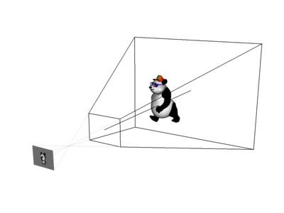

Panda3D Manual: Lens tutorial perspective.jpg
{kind=link}
{kind=link}
{kind=link}

No higher resolution available.
Lens_tutorial_perspective.jpg (400 × 300 pixels, file size: 13 KB, MIME type: image/jpeg)
This image, as well as the other two lens tutorial images, were generated with the following Panda code. Set your window-size to 800x600 or 1200x900 for best effect.
from direct.directbase.DirectStart import *
from direct.actor.Actor import Actor
from pandac.PandaModules import *
buf = None
bufcamera = None
# Define bitmasks to control what should be seen by each camera.
TopViewMask = BitMask32.bit(0)
PerspectiveViewMask = BitMask32.bit(1)
InternalViewMask = BitMask32.bit(2)
def setupStage():
base.setBackgroundColor(1, 1, 1, 0)
# A "stage" node to hold the stuff the lens is looking at.
stage = render.attachNewNode('stage')
stage.setPos(0, 35, -5)
# A light to illuminate the items on stage.
dlnp = base.camera.attachNewNode(DirectionalLight('dl').upcastToPandaNode())
stage.setLight(dlnp)
# Some geometry on the stage for the camera to look at.
panda = Actor('panda.egg', { 'walk' : 'panda-walk.egg' })
panda.reparentTo(stage)
panda.setHpr(-20, 0, 0)
panda.pose('walk', 0)
# An offscreen buffer to render the stage for the film plane.
global buf, bufcamera
buf = base.win.makeTextureBuffer('panda', 256, 256)
bufcamera = NodePath(Camera('bufcamera'))
bufcamera.node().setCameraMask(InternalViewMask)
buf.makeDisplayRegion().setCamera(bufcamera)
def setupLens(lens):
# We create a camera "rig" node to hold the lens assembly.
rig = render.attachNewNode('rig')
# The entire rig assembly is invisible to the internal camera.
rig.hide(InternalViewMask)
# The lens is used to draw the black frustum, and also serves as
# the lens for rendering the offscreen image that is drawn on the
# film plane.
lens.setFilmSize(20, 15)
lens.setNearFar(10, 50)
lensNP = rig.attachNewNode(GeomNode('lens'))
lensNP.node().addGeom(lens.makeGeometry())
# Make the frustum black.
lensNP.setColor(0, 0, 0, 1)
# And also make it have thick (2-pixel) lines. This only works on
# OpenGL.
lensNP.setRenderMode(RenderModeAttrib.MUnchanged, 2)
# Get the 3-d points corresponding to the diagonal corners of the
# lens, on the near plane and on the far plane.
nll = Point3()
nur = Point3()
fll = Point3()
fur = Point3()
lens.extrude(Point2(-1, -1), nll, fll)
lens.extrude(Point2(1, 1), nur, fur)
# Flip those around to the film plane.
if lens.isOrthographic():
pll = Point3(nll[0], nll[1] * -0.6, nll[2])
pur = Point3(nur[0], nur[1] * -0.6, nur[2])
else:
pll = nll * -0.6
pur = nur * -0.6
# Now draw gray lines from the near plane to the film plane.
ls = LineSegs()
ls.setColor(0.8, 0.8, 0.8)
ls.moveTo(nur)
ls.drawTo(pur)
ls.moveTo(nur[0], nur[1], nll[2])
ls.drawTo(pur[0], pur[1], pll[2])
ls.moveTo(nll)
ls.drawTo(pll)
ls.moveTo(nll[0], nll[1], nur[2])
ls.drawTo(pll[0], pll[1], pur[2])
ls.moveTo(pur)
ls.drawTo(pur[0], pur[1], pll[2])
ls.drawTo(pll)
ls.drawTo(pll[0], pll[1], pur[2])
ls.drawTo(pur)
rig.attachNewNode(ls.create())
# A node for stuff that is visible only to the topview camera.
topViewStuff = rig.attachNewNode('topViewStuff')
topViewStuff.hide()
topViewStuff.show(TopViewMask)
# Draw some more lines for the topview camera, in blue this time,
# to measure things.
ls = LineSegs()
ls.setColor(0.4, 0.5, 1)
tw = 0.5 # tick width for measurer ticks
bl = 0.5 # baseline for labels
# A TextNode to generate labels for each measurer.
labels = TextNode('labels')
labels.setTextColor(0.4, 0.5, 1, 1)
labels.setAlign(TextNode.ACenter)
labels.setTransform(Mat4.scaleMat(3))
# The near distance measurer
nm = 10
ls.moveTo(nm - tw, nur[1], 0)
ls.drawTo(nm + tw, nur[1], 0)
ls.moveTo(nm, nur[1], 0)
ls.drawTo(nm, 0, 0)
ls.moveTo(nm - tw, 0, 0)
ls.drawTo(nm + tw, 0, 0)
labels.setText('C')
topViewStuff.attachNewNode(labels.generate()).setPosHpr(nm - bl, nur[1] / 2, 0,
90, -90, 0)
# The far distance measurer
fm = 25
ls.moveTo(fm - tw, fur[1], 0)
ls.drawTo(fm + tw, fur[1], 0)
ls.moveTo(fm, fur[1], 0)
ls.drawTo(fm, 0, 0)
ls.moveTo(fm - tw, 0, 0)
ls.drawTo(fm + tw, 0, 0)
labels.setText('D')
topViewStuff.attachNewNode(labels.generate()).setPosHpr(fm - bl, fur[1] / 2, 0,
90, -90, 0)
# The nodal point indicator
np = 2.5
ls.moveTo(0, 0, 0)
ls.drawTo(np, 0, 0)
labels.setText('A')
topViewStuff.attachNewNode(labels.generate()).setPosHpr(np + 2.5, 0, 0,
90, -90, 0)
# The focal length measurer
fl = -3.5
ls.moveTo(fl - tw, pur[1], 0)
ls.drawTo(fl + tw, pur[1], 0)
ls.moveTo(fl, pur[1], 0)
ls.drawTo(fl, 0, 0)
ls.moveTo(fl - tw, 0, 0)
ls.drawTo(fl + tw, 0, 0)
labels.setText('F')
topViewStuff.attachNewNode(labels.generate()).setPosHpr(fl - bl, pur[1] / 2, 0,
90, -90, 0)
# The film size measurer
fs = -7.5
ls.moveTo(pll[0], fs - tw, 0)
ls.drawTo(pll[0], fs + tw, 0)
ls.moveTo(pll[0], fs, 0)
ls.drawTo(pur[0], fs, 0)
ls.moveTo(pur[0], fs - tw, 0)
ls.drawTo(pur[0], fs + tw, 0)
labels.setText('E')
labels.setAlign(TextNode.ARight)
topViewStuff.attachNewNode(labels.generate()).setPosHpr(1.5 - bl, fs - bl, 0,
90, -90, 0)
topViewStuff.attachNewNode(ls.create())
# Draw an arc to measure field of view
ls.reset()
radius = 8
numTicks = 100
for i in range(numTicks):
x = (float(i) / float(numTicks - 1)) * 2 - 1
n = Point3()
f = Point3()
lens.extrude(Point2(x, 0), n, f)
v = f - n
v.normalize()
v = v * radius
ls.drawTo(v)
labels.setText('B')
topViewStuff.attachNewNode(labels.generate()).setPosHpr(1.5 - bl, radius - bl, 0,
90, -90, 0)
topViewStuff.attachNewNode(ls.create())
# Make sure the buffer camera uses this lens to view this scene.
bufcamera.reparentTo(rig)
bufcamera.node().setLens(lens)
# Now a polygon to show the contents of whatever that camera sees.
cm = CardMaker('filmPlane')
cm.setFrame(pll[0], pur[0], pll[2], pur[2])
card = rig.attachNewNode(cm.generate())
card.setPos(0, pll[1], 0)
card.setTexture(buf.getTexture())
return rig
def perspectiveViewA():
base.camNode.setLens(base.camLens)
base.camNode.setCameraMask(PerspectiveViewMask)
base.disableMouse()
base.camera.setPosHpr(42.4, -46.6, 23.4, 31, -15, 0)
def perspectiveViewB():
base.camNode.setLens(base.camLens)
base.camNode.setCameraMask(PerspectiveViewMask)
base.disableMouse()
base.camera.setPosHpr(50, -46, 32, 38, -22, 0)
def topView():
orthoLens = OrthographicLens()
orthoLens.setFilmSize(80, 60)
base.camNode.setLens(orthoLens)
base.camNode.setCameraMask(TopViewMask)
base.disableMouse()
base.camera.setPosHpr(0, 22, 50, 90, -90, 0)
def mouseView():
base.camNode.setLens(base.camLens)
base.camNode.setCameraMask(BitMask32.allOn())
base.enableMouse()
def antialiasedScreenshot(filename):
# Ensure the frame is rendered.
base.graphicsEngine.renderFrame()
# Grab the screenshot into a big image
full = PNMImage()
base.win.getScreenshot(full)
# Now reduce it
reduced = PNMImage(400, 300)
reduced.gaussianFilterFrom(1, full)
# And write it out.
reduced.write(Filename(filename))
def saveScreenshots():
rig = setupLens(PerspectiveLens())
perspectiveViewA()
antialiasedScreenshot('lens_tutorial_perspective.jpg')
topView()
antialiasedScreenshot('lens_tutorial_top.jpg')
rig.detachNode()
rig = setupLens(OrthographicLens())
perspectiveViewB()
antialiasedScreenshot('lens_tutorial_orthographic.jpg')
rig.detachNode()
setupStage()
saveScreenshots()
|
File history
Click on a date/time to view the file as it appeared at that time.
| Date/Time | Thumbnail | Dimensions | User | Comment | |
|---|---|---|---|---|---|
| current | 20:15, 11 August 2005 |  | 400 × 300 (13 KB) | Drwr (Talk | contribs) | |
| 19:38, 11 August 2005 |  | 400 × 300 (11 KB) | Drwr (Talk | contribs) |
- Edit this file using an external application (See the setup instructions for more information)
{kind=link}
File usage
The following page links to this file:
| Back to the Manual |
© Carnegie Mellon University 2010